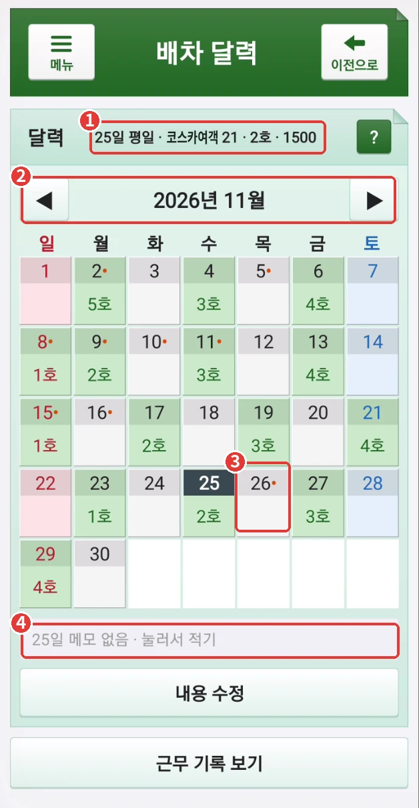
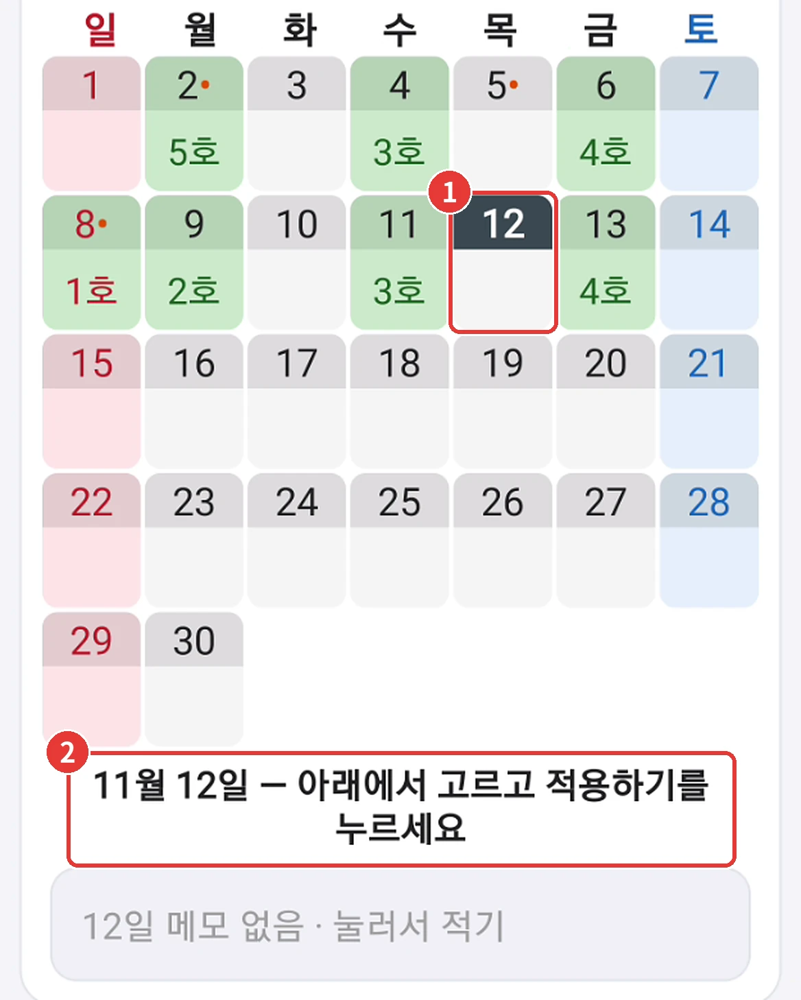
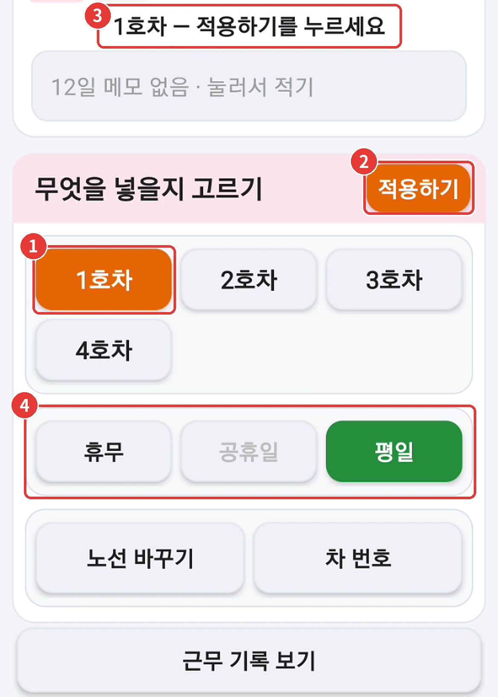
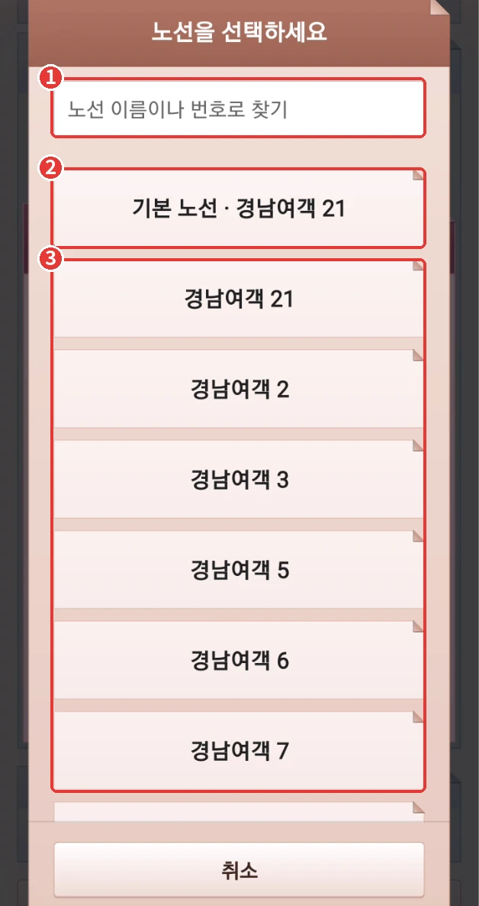
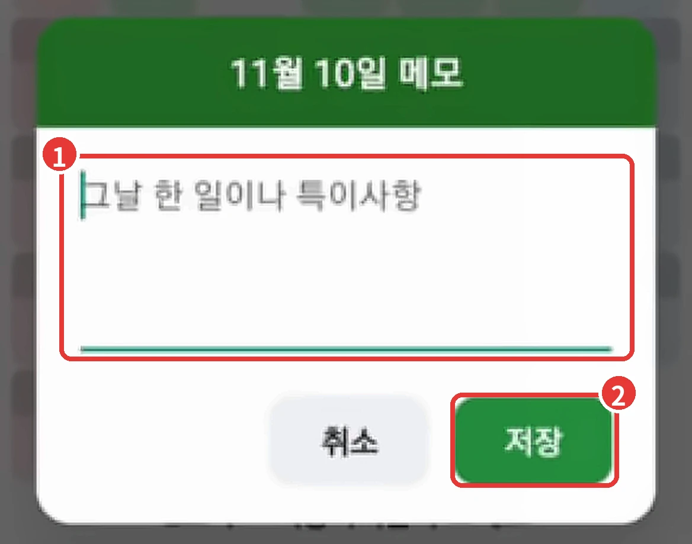

① 고른 날의 내용입니다. (평일 · 노선 · 호차 · 차 번호)
② 앞 달 · 다음 달로 넘깁니다.
③ 날짜 칸 : 위는 날짜, 아래는 그날 맡은 호차입니다. "4호 6"처럼 숫자가 붙으면 그날 6회차만 한 날입니다.
④ 메모 칸 : 날짜를 누른 뒤 여기를 누르면 그날 메모를 적습니다.
날짜 옆 주황 점은 메모가 있는 날, * 는 공휴일 · 평일을 손으로 바꾼 날, × 는 지금 시간표에 없는 호차입니다.

① 바꿀 날짜를 누릅니다. 검은 바탕으로 바뀝니다.
② 아래에 "아래에서 고르고 적용하기를 누르세요"가 나옵니다.

① 그날 맡을 호차를 누릅니다. 주황으로 바뀝니다.
② 적용하기를 눌러야 저장됩니다. 고르기만 하고 나가면 저장되지 않습니다.
③ 무엇을 골랐는지 여기에 나옵니다.
④ 쉬는 날은 휴무, 공휴일 · 평일 시간표를 바꿀 날은 공휴일 · 평일을 고른 뒤 적용하기를 누릅니다.
노선 바꾸기 · 차 번호 · 근무 기록 보기는 맨 아래에 있습니다.

① 검색 칸 : 노선 이름이나 번호를 치면 그 글자가 들어간 노선만 남습니다. 빈칸과 '번' 글자는 빼고 찾습니다.
② 기본 노선 : 고른 날을 기본 노선으로 되돌립니다. 무엇을 찾든 늘 맨 위에 있습니다.
③ 다른 노선을 누르면 고른 날 하루만 그 노선으로 바뀝니다.

① 그날 한 일이나 특이사항을 적습니다.
② 저장을 누르면 날짜 옆에 주황 점이 찍힙니다.